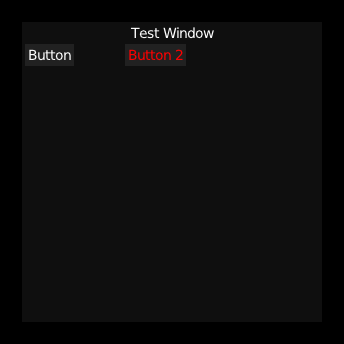

I made this GUI framework to aid the creation of OpenMV. It's purpose was for displaying debug information and some in-game GUI.
It's still a work-in-progress; As of writing it has the following features:
The API looks something like this (called every frame, since it is an immediate-mode system):
if (ui_begin_window(ui, "Test Window", make_v2i(0, 0), null)) {
ui_columns(ui, 2, 100);
if (ui_button(ui, "Button")) {
printf("Button has been pressed!\n");
}
ui_color(ui, make_color(0xff0000, 255));
if (ui_button(ui, "Button 2")) {
printf("Button 2 has been pressed!\n");
}
ui_reset_color(ui);
ui_columns(ui, 1, 0);
ui_end_window(ui);
}
The result of this being:

Layouts are handled using a point for the current "cursor position". The current cursor position is where the next element will be drawn.
The active, hovered and hot elements are stored as pointers into the aforementioned vector and are set
upon interaction with a given element. For example, the ui_button function first pushes a new button
element into the element vector of the current window, then checks for interactions, setting the hot
pointer to the previously pushed element if the mouse is held over the button, or the hovered pointer
if the button is hovered. It then returns true if the mouse was released over the button (indicating a
button press) or false otherwise.